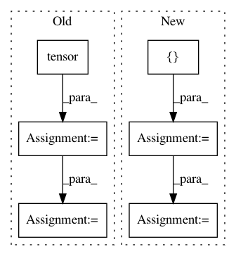

54ff7b04669450ceca33852407891c5645472ca5,test/utils/test_convert.py,,test_to_networkx,#,27
Before Change
x = torch.Tensor([[1, 2], [3, 4]])
pos = torch.Tensor([[0, 0], [1, 1]])
row = torch.tensor([0, 1, 0])
col = torch.tensor([1, 0, 0])
edge_attr = torch.Tensor([1, 2, 3])
G = to_networkx(torch.stack([row, col], dim=0), x, edge_attr, pos)
assert G.nodes[0]["x"].tolist() == [1, 2]
assert G.nodes[1]["x"].tolist() == [3, 4]
assert G.nodes[0]["pos"].tolist() == [0, 0]
assert G.nodes[1]["pos"].tolist() == [1, 1]
assert networkx.to_numpy_matrix(G).tolist() == [[3, 1], [2, 0]]
edge_attr = torch.Tensor([[1, 1], [2, 2], [3, 3]])
G = to_networkx(torch.stack([row, col], dim=0), edge_attr=edge_attr)
assert G[0][0]["weight"].tolist() == [3, 3]
assert G[0][1]["weight"].tolist() == [1, 1]
assert G[1][0]["weight"].tolist() == [2, 2]
After Change
def test_to_networkx():
x = torch.Tensor([[1, 2], [3, 4]])
pos = torch.Tensor([[0, 0], [1, 1]])
edge_index = torch.tensor([[0, 1, 0], [1, 0, 0]])
edge_attr = torch.Tensor([1, 2, 3])
data = Data(x=x, pos=pos, edge_index=edge_index, weight=edge_attr)
G = to_networkx(data, node_attrs=["x", "pos"], edge_attrs=["weight"])
assert G.nodes[0]["x"] == [1, 2]
assert G.nodes[1]["x"] == [3, 4]
assert G.nodes[0]["pos"] == [0, 0]
assert G.nodes[1]["pos"] == [1, 1]
In pattern: SUPERPATTERN
Frequency: 3
Non-data size: 6
Instances
Project Name: rusty1s/pytorch_geometric
Commit Name: 54ff7b04669450ceca33852407891c5645472ca5
Time: 2019-04-29
Author: matthias.fey@tu-dortmund.de
File Name: test/utils/test_convert.py
Class Name:
Method Name: test_to_networkx
Project Name: rusty1s/pytorch_geometric
Commit Name: 14b628e18fdefc250915ddc7b7b39f7880dad6cf
Time: 2019-07-04
Author: matthias.fey@tu-dortmund.de
File Name: test/nn/glob/test_glob.py
Class Name:
Method Name: test_permuted_global_pool
Project Name: stanfordnlp/stanza
Commit Name: db7b74579181f9cbae3583f447d83148714a1c3d
Time: 2020-06-15
Author: horatio@gmail.com
File Name: stanza/models/classifiers/cnn_classifier.py
Class Name: CNNClassifier
Method Name: forward